End-to-End Object Detection for Unity With IceVision and OpenVINO Pt. 2
- Overview
- Install OpenVINO
- Create DLL Project
- Configure the Project
- Add Include Directories
- Link Libraries
- Post Build Events
- Update Precompiled Header File
- Update dllmain File
- Build Solution
- Gather Dependencies
- Summary
Overview
Part 1 covered finetuning an object detection model using the IceVision library and exporting it as an OpenVINO IR model. This post covers creating a dynamic link library (DLL) file in Visual Studio to perform inference with this model using OpenVINO.
Important: This post assumes Visual Studio is present on your system.
Install OpenVINO
We need to download the OpenVINO Toolkit before creating our Visual Studio project. Go to the OpenVINO download page linked below.
Download OpenVINO Toolkit
Select the options outlined in the image below and click the Download button.

Double-click the file once it finishes downloading and click the Extract button in the popup window.

The installer will then verify the computer meets the system requirements. The toolkit includes the Python scripts for converting models, which require Python 3.6, 3.7, 3.8, or 3.9 to run. We will only use the files for C++ development in this post.

We can stick with the default Recommended Installation option.

The installer will then ask whether Intel can collect some information before starting the installation process.
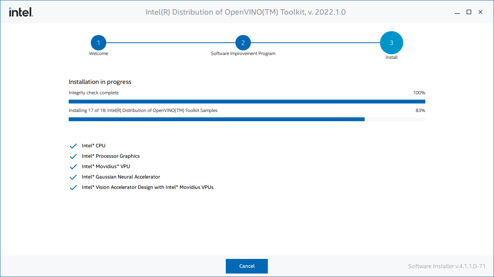
Click Finish once the installation process completes.

Inspect OpenVINO Folder
If we look at the installation folder for the toolkit, we can see it also includes a version of OpenCV. We’ll use OpenCV to prepare image data from Unity before feeding it to the model.

I like to copy the OpenVINO folder to a separate directory with other dependencies for my C++ projects.
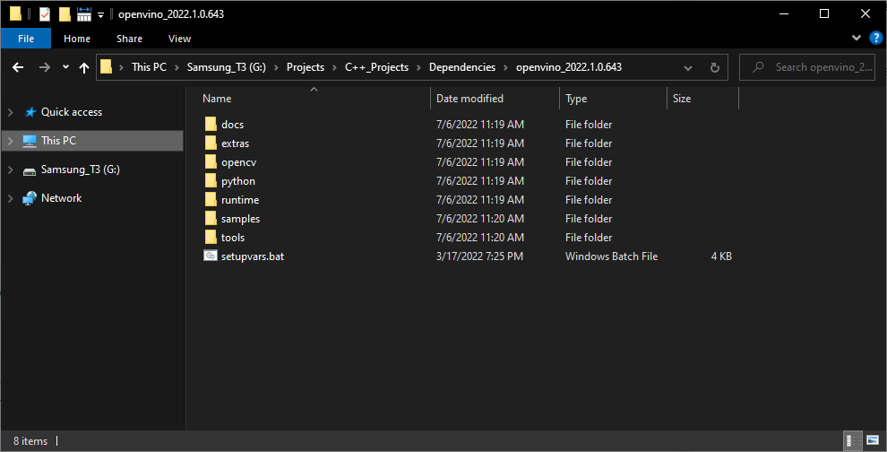
Now we can create our Visual Studio DLL project.
Create DLL Project
Open Visual Studio and select the Create a new project option.

Type DLL into the text box and select the Dynamic-Link Library (DLL) option. This option automatically configures a few parameters for us compared to starting with a standard console application.

Choose a name and location for the project and click the Create button. By default, the DLL file will use the project name.

Configure the Project
At the top of the window, open the Solution Configurations dropdown menu, and select Release.
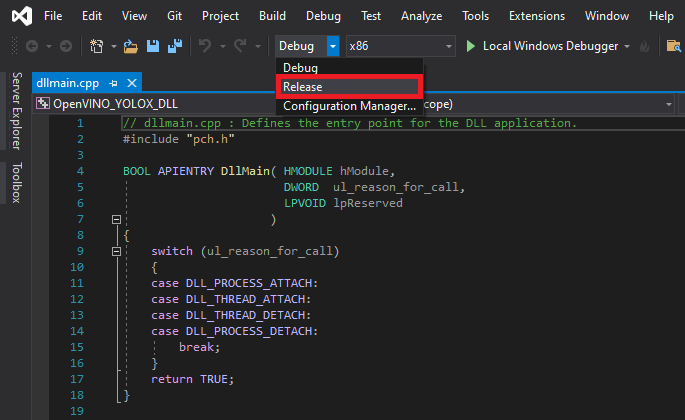
Then, open the Solution Platform dropdown menu and select x64.

Add Include Directories
We need to tell Visual Studio where OpenVINO and OpenCV are so we can access their APIs. Right-click the project name in the Solution Explorer panel.
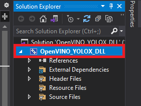
Select the Properties option in the popup menu.

In the Properties Window, open on the C/C++ dropdown. Select the Additional Include Directories section and click on <Edit..> in the dropdown.
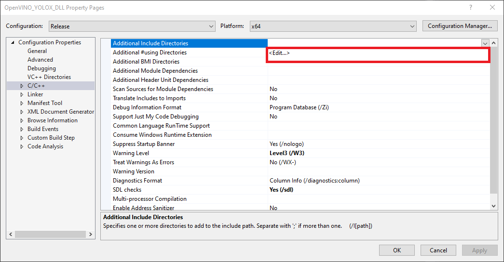
Add the paths for the following folders, replacing <parent-folder-path> with the full path to the parent folder for the OpenVINO Toolkit, and click OK.
<parent-folder-path>\openvino_2022.1.0.643\runtime\include\ie<parent-folder-path>\openvino_2022.1.0.643\runtime\include<parent-folder-path>\openvino_2022.1.0.643\opencv\include<parent-folder-path>\openvino_2022.1.0.643\runtime\3rdparty\tbb\include

Link Libraries
Next, open the Linker dropdown in the Properties window and select Input. Select Additional Dependencies and click <Edit..>.
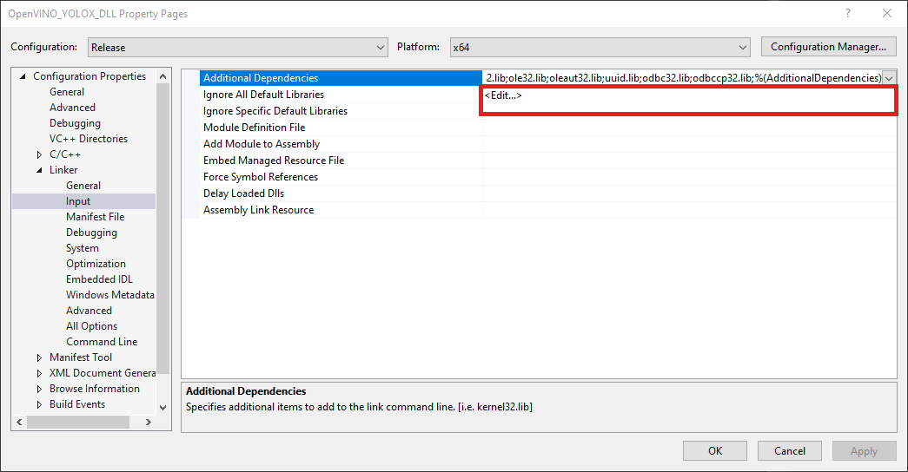
Add the paths to the following files, replacing <parent-folder-path> with the full path to the parent folder for the OpenVINO Toolkit, and click OK.
<parent-folder-path>\openvino_2022.1.0.643\opencv\lib\*<parent-folder-path>\openvino_2022.1.0.643\runtime\lib\intel64\Release\*<parent-folder-path>\openvino_2022.1.0.643\runtime\3rdparty\tbb\lib\*.lib
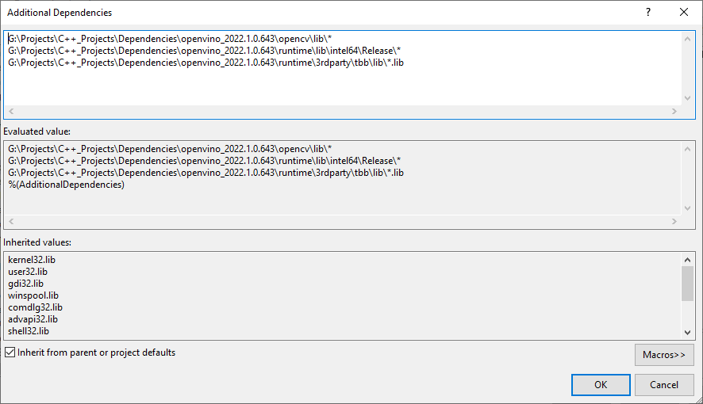
Post Build Events
Our DLL file will depend on the following DLL files included with the OpenVINO and OpenCV libraries.
OpenCV DLL files
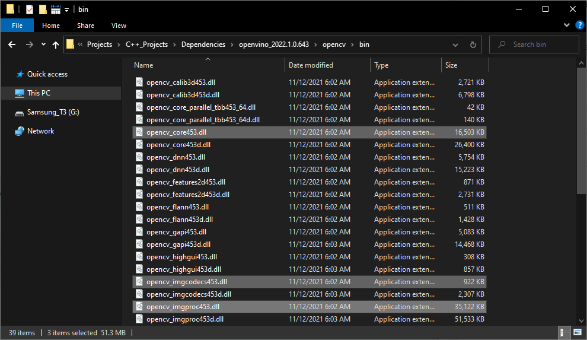
OpenVINO DLL files

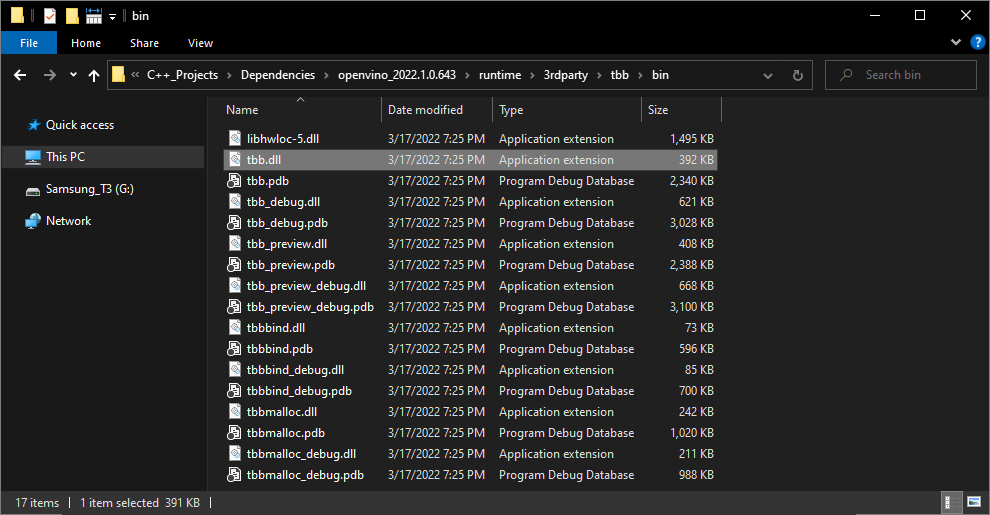
We can add a post-build event in Visual Studio to automatically copy these DLL files to the build folder for the project at compile time. Open the Build Events dropdown in the Properties window and select Post-Build Event. Select Command Line and click <Edit..>.

Add the following commands, replacing <parent-folder-path> with the full path to the parent folder for the OpenVINO Toolkit, and click OK.
xcopy <parent-folder-path>\openvino_2022.1.0.643\opencv\bin\opencv_core453.dll $(SolutionDir)$(Platform)\$(Configuration)\ /c /yxcopy <parent-folder-path>\openvino_2022.1.0.643\opencv\bin\opencv_imgproc453.dll $(SolutionDir)$(Platform)\$(Configuration)\ /c /yxcopy <parent-folder-path>\openvino_2022.1.0.643\opencv\bin\opencv_imgcodecs453.dll $(SolutionDir)$(Platform)\$(Configuration)\ /c /yxcopy <parent-folder-path>\openvino_2022.1.0.643\runtime\bin\intel64\Release\* $(SolutionDir)$(Platform)\$(Configuration)\ /c /yxcopy <parent-folder-path>\openvino_2022.1.0.643\runtime\3rdparty\tbb\bin\tbb.dll $(SolutionDir)$(Platform)\$(Configuration)\ /c /y

Finally, click the Apply button and close the Properties window.

With the dependencies taken care of, we can start modifying the code.
Update Precompiled Header File
We’ll first update the pch.h Precompiled Header file with the required header files. We can open the pch.h file by selecting it in the Solution Explorer window.
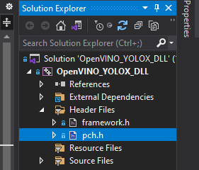
Comment or remove the #include line for the framework.h header file.
// pch.h: This is a precompiled header file.
// Files listed below are compiled only once, improving build performance for future builds.
// This also affects IntelliSense performance, including code completion and many code browsing features.
// However, files listed here are ALL re-compiled if any one of them is updated between builds.
// Do not add files here that you will be updating frequently as this negates the performance advantage.
#ifndef PCH_H
#define PCH_H
// add headers that you want to pre-compile here
//#include "framework.h"
#endif //PCH_HAdd required header files
Next, we’ll add the required header files for OpenVINO and OpenCV below //#include "framework.h" line.
// pch.h: This is a precompiled header file.
// Files listed below are compiled only once, improving build performance for future builds.
// This also affects IntelliSense performance, including code completion and many code browsing features.
// However, files listed here are ALL re-compiled if any one of them is updated between builds.
// Do not add files here that you will be updating frequently as this negates the performance advantage.
#ifndef PCH_H
#define PCH_H
// add headers that you want to pre-compile here
//#include "framework.h"
#include "openvino/openvino.hpp"
#include <opencv2/opencv.hpp>
#endif //PCH_HUpdate dllmain File
By default, the dllmain.cpp file contains the following code.
// dllmain.cpp : Defines the entry point for the DLL application.
#include "pch.h"
BOOL APIENTRY DllMain( HMODULE hModule,
DWORD ul_reason_for_call,
LPVOID lpReserved
)
{
switch (ul_reason_for_call)
{
case DLL_PROCESS_ATTACH:
case DLL_THREAD_ATTACH:
case DLL_THREAD_DETACH:
case DLL_PROCESS_DETACH:
break;
}
return TRUE;
}We can delete everything below the #include "pch.h" line.
Create a macro to mark functions we want to make accessible in Unity
// dllmain.cpp : Defines the entry point for the DLL application.
#include "pch.h"
// Create a macro to quickly mark a function for export
#define DLLExport __declspec (dllexport)
**Wrap the code in extern "C" to prevent name-mangling issues with the compiler**
The rest of our code will go inside here.
```c++
// Wrap code to prevent name-mangling issues
extern "C" {
}Define variables
Inside the wrapper, we will declare the persistent variables needed for the DLL.
- ov::Core: represents an OpenVINO runtime Core entity
- ov::Model: A user-defined model
- ov::CompiledModel: represents a compiled model
- ov::InferRequest: an infer request that can be run in asynchronous or synchronous manners
- ov::Tensor: API holding host memory
// Inference engine instance
ov::Core core;
// The user define model representation
std::shared_ptr<ov::Model> model;
// A device-specific compiled model
ov::CompiledModel compiled_model;
// List of available compute devices
std::vector<std::string> available_devices;
// An inference request for a compiled model
ov::InferRequest infer_request;
// Stores the model input data
ov::Tensor input_tensor;
// A pointer for accessing the input tensor data
float* input_data;
// model has only one output
ov::Tensor output_tensor;
// A pointer for accessing the output tensor data
float* out_data;
// The current source image width
int img_w;
// The current source image height
int img_h;
// The current model input width
int input_w;
// The current model input height
int input_h;
// The total number pixels in the input image
int n_pixels;
// The number of color channels
int n_channels = 3;
// Stores information about a single object prediction
struct Object
{
float x0;
float y0;
float width;
float height;
int label;
float prob;
};
// Store grid offset and stride values to decode a section of the model output
struct GridAndStride
{
int grid0;
int grid1;
int stride;
};
// The scale values used to adjust the model output to the source image resolution
float scale_x;
float scale_y;
// The minimum confidence score to consider an object proposal
float bbox_conf_thresh = 0.3;
// The maximum intersection over union value before an object proposal will be ignored
float nms_thresh = 0.45;
// Stores the grid and stride values to navigate the raw model output
std::vector<GridAndStride> grid_strides;
// Stores the object proposals with confidence scores above bbox_conf_thresh
std::vector<Object> proposals;
// Stores the indices for the object proposals selected using non-maximum suppression
std::vector<int> proposal_indices;
// The stride values used to generate the gride_strides vector
std::vector<int> strides = { 8, 16, 32 };Define a function to get the number of compute devices
The first function we’ll define will create a list of available device names and return the number of devices accessible by OpenVINO. We’ll use this information to select which device to use to perform inference from the Unity application. There might be an option named GNA (Gaussian & Neural Accelerator). GNA is a highly specialized neural coprocessor for tasks like noise cancellation. We’ll exclude it from the list of devices presented to the end user.
- ov::Core::get_available_devices(): Returns devices available for inference
/// <summary>
/// Get the number of available compute devices
/// </summary>
/// <returns>The number of available devices</returns>
DLLExport int GetDeviceCount()
{
// Reset list of available compute devices
available_devices.clear();
// Populate list of available compute devices
for (std::string device : core.get_available_devices()) {
// Skip GNA device
if (device.find("GNA") == std::string::npos) {
available_devices.push_back(device);
}
}
// Return the number of available compute devices
return available_devices.size();
}Define a function to get the name of a compute device
Next, we’ll define a function to return the name of a device at a specified index for the list of available devices.
/// <summary>
/// Get the name of the compute device name at the specified index
/// </summary>
/// <param name="index"></param>
/// <returns>The name of the device at the specified index</returns>
DLLExport std::string* GetDeviceName(int index) {
return &available_devices[index];
}Define method to generate stride values to navigate the raw model output
The method for generating the offset values used to traverse the output array is almost identical to the Python implementation from part 1.
/// <summary>
/// Generate offset values to navigate the raw model output
/// </summary>
/// <param name="height">The model input height</param>
/// <param name="width">The model input width</param>
void GenerateGridsAndStride(int height, int width)
{
// Remove the values for the previous input resolution
grid_strides.clear();
// Iterate through each stride value
for (auto stride : strides)
{
// Calculate the grid dimensions
int grid_height = height / stride;
int grid_width = width / stride;
// Store each combination of grid coordinates
for (int g1 = 0; g1 < grid_height; g1++)
{
for (int g0 = 0; g0 < grid_width; g0++)
{
grid_strides.push_back(GridAndStride{ g0, g1, stride });
}
}
}
}Define a function to set the minimum confidence score from Unity
We might want to try different confidence thresholds for keeping object proposals from the Unity application, so we’ll add a function to enable this.
/// <summary>
/// Set minimum confidence score for keeping bounding box proposals
/// </summary>
/// <param name="min_confidence">The minimum confidence score for keeping bounding box proposals</param>
DLLExport void SetConfidenceThreshold(float min_confidence)
{
bbox_conf_thresh = min_confidence;
}Define a function to load an OpenVINO model
OpenVINO needs to compile models for the target device. This process can take several seconds when using GPU inference. We can create a cache directory, so we only need to compile models for a specific resolution-device pair once.
We’ll place the code for loading an OpenVINO model inside a try-catch block to avoid crashing the application if we pass an incorrect file path.
If the model loads successfully, we’ll attempt to reshape the model input to the desired input dimensions. After reshaping the model input, we can compile the model for the target device.
We can get pointers to the model input tensor and create an inference request using the compiled model.
- ov::Core::set_property(): Sets properties for a device
- ov::Core::read_model(): Reads models from IR/ONNX/PDPD formats
- ov::Model::reshape(): Updates input shapes and propagates them down to the outputs of the model through all intermediate layers
- ov::Core::compile_model(): Creates a compiled model from a source model object
- ov::CompiledModel::create_infer_request(): Creates an inference request object used to infer the compiled model
- ov::InferRequest::get_input_tensor(): Gets an input tensor for inference
/// <summary>
/// Load a model from the specified file path
/// </summary>
/// <param name="model_path">The full model path to the OpenVINO IR model</param>
/// <param name="index">The index for the available_devices vector</param>
/// <param name="image_dims">The source image dimensions</param>
/// <returns>A status value indicating success or failure to load and reshape the model</returns>
DLLExport int LoadModel(char* model_path, int index, int image_dims[2])
{
int return_val = 0;
// Set the cache directory for compiled GPU models
core.set_property("GPU", ov::cache_dir("cache"));
// Try loading the specified model
try { model = core.read_model(model_path); }
catch (...) { return 1; }
// The dimensions of the source input image
img_w = image_dims[0];
img_h = image_dims[1];
// Calculate new input dimensions based on the max stride value
input_w = (int)(strides.back() * std::roundf(img_w / strides.back()));
input_h = (int)(strides.back() * std::roundf(img_h / strides.back()));
n_pixels = input_w * input_h;
// Calculate the value used to adjust the model output to the source image resolution
scale_x = input_w / (img_w * 1.0);
scale_y = input_h / (img_h * 1.0);
// Generate the grid and stride values based on input resolution
grid_strides.clear();
GenerateGridsAndStride(input_h, input_w);
// Try updating the model input dimensions
try { model->reshape({ 1, 3, input_h, input_w }); }
catch (...) { return_val = 2; }
// Create a compiled model for the taret compute device
auto compiled_model = core.compile_model(model, "MULTI",
ov::device::priorities(available_devices[index]),
ov::hint::performance_mode(ov::hint::PerformanceMode::LATENCY),
ov::hint::inference_precision(ov::element::f32));
// Create an inference request
infer_request = compiled_model.create_infer_request();
// Get input tensor by index
input_tensor = infer_request.get_input_tensor(0);
// Get a pointer to the input tensor data
input_data = input_tensor.data<float>();
// Get output tensor
output_tensor = infer_request.get_output_tensor();
// Get a pointer to the output tensor data
out_data = output_tensor.data<float>();
// Replace the initial input dims with the updated values
image_dims[0] = input_w;
image_dims[1] = input_h;
// Return a value of 0 if the model loads successfully
return return_val;
}Define method to generate object detection proposals from the raw model output
The method to generate object proposals is nearly identical to the Python implementation from part 1.
/// <summary>
/// Generate object detection proposals from the raw model output
/// </summary>
/// <param name="out_ptr">A pointer to the output tensor data</param>
void GenerateYoloxProposals(float* out_ptr, int proposal_length)
{
// Remove the proposals for the previous model output
proposals.clear();
// Obtain the number of classes the model was trained to detect
int num_classes = proposal_length - 5;
for (int anchor_idx = 0; anchor_idx < grid_strides.size(); anchor_idx++)
{
// Get the current grid and stride values
int grid0 = grid_strides[anchor_idx].grid0;
int grid1 = grid_strides[anchor_idx].grid1;
int stride = grid_strides[anchor_idx].stride;
// Get the starting index for the current proposal
int start_idx = anchor_idx * proposal_length;
// Get the coordinates for the center of the predicted bounding box
float x_center = (out_ptr[start_idx + 0] + grid0) * stride;
float y_center = (out_ptr[start_idx + 1] + grid1) * stride;
// Get the dimensions for the predicted bounding box
float w = exp(out_ptr[start_idx + 2]) * stride;
float h = exp(out_ptr[start_idx + 3]) * stride;
// Calculate the coordinates for the upper left corner of the bounding box
float x0 = x_center - w * 0.5f;
float y0 = y_center - h * 0.5f;
// Get the confidence score that an object is present
float box_objectness = out_ptr[start_idx + 4];
// Initialize object struct with bounding box information
Object obj = { x0, y0, w, h, 0, 0 };
// Find the object class with the highest confidence score
for (int class_idx = 0; class_idx < num_classes; class_idx++)
{
// Get the confidence score for the current object class
float box_cls_score = out_ptr[start_idx + 5 + class_idx];
// Calculate the final confidence score for the object proposal
float box_prob = box_objectness * box_cls_score;
// Check for the highest confidence score
if (box_prob > obj.prob)
{
obj.label = class_idx;
obj.prob = box_prob;
}
}
// Only add object proposals with high enough confidence scores
if (obj.prob > bbox_conf_thresh) proposals.push_back(obj);
}
// Sort the proposals based on the confidence score in descending order
std::sort(proposals.begin(), proposals.end(), [](Object& a, Object& b) -> bool
{ return a.prob > b.prob; });
}Define function to sort bounding box proposals using Non-Maximum Suppression
The C++ API for OpenCV has built-in functionality to perform comparison operations between rectangles. Therefore, we don’t need to define helper functions to calculate the intersection and union areas of two bounding boxes. Otherwise, the method to sort bounding box proposals using Non-Maximum Suppression is almost identical to the Python implementation from part 1.
/// <summary>
/// Filter through a sorted list of object proposals using Non-maximum suppression
/// </summary>
void NmsSortedBboxes()
{
// Remove the picked proposals for the previous model outptut
proposal_indices.clear();
// Iterate through the object proposals
for (int i = 0; i < proposals.size(); i++)
{
Object& a = proposals[i];
// Create OpenCV rectangle for the Object bounding box
cv::Rect_<float> rect_a = cv::Rect_<float>(a.x0, a.y0, a.width, a.height);
bool keep = true;
// Check if the current object proposal overlaps any selected objects too much
for (int j : proposal_indices)
{
Object& b = proposals[j];
// Create OpenCV rectangle for the Object bounding box
cv::Rect_<float> rect_b = cv::Rect_<float>(b.x0, b.y0, b.width, b.height);
// Calculate the area where the two object bounding boxes overlap
float inter_area = (rect_a & rect_b).area();
// Calculate the union area of both bounding boxes
float union_area = rect_a.area() + rect_b.area() - inter_area;
// Ignore object proposals that overlap selected objects too much
if (inter_area / union_area > nms_thresh)
keep = false;
}
// Keep object proposals that do not overlap selected objects too much
if (keep) proposal_indices.push_back(i);
}
}Define a function to perform inference
We will access the pixel data for the input image from Unity with a pointer to a uchar (unsigned 1-byte integer) array and wrap the data in a cv::Mat variable for processing.
We don’t need to normalize the input image since the IR model does it internally.
After processing the model output, we’ll return the final number of detected objects to Unity so we can initialize an array of objects.
- cv::Mat: n-dimensional dense array class
- cv::cvtColor(): Converts an image from one color space to another
- ov::InferRequest::infer(): Infers specified input in synchronous mode
- ov::InferRequest::get_output_tensor(): Gets an output tensor for inference
/// <summary>
/// Perform inference with the provided texture data
/// </summary>
/// <param name="image_data">The source image data from Unity</param>
/// <returns>The final number of detected objects</returns>
DLLExport int PerformInference(uchar* image_data)
{
// Store the pixel data for the source input image in an OpenCV Mat
cv::Mat input_image = cv::Mat(img_h, img_w, CV_8UC4, image_data);
// Remove the alpha channel
cv::cvtColor(input_image, input_image, cv::COLOR_RGBA2RGB);
// Resize the input image
cv::resize(input_image, input_image, cv::Size(input_w, input_h));
// Iterate over each pixel in image
for (int p = 0; p < n_pixels; p++)
{
input_data[0*n_pixels + p] = input_image.data[p*n_channels + 0] / 255.0f;
input_data[1*n_pixels + p] = input_image.data[p*n_channels + 1] / 255.0f;
input_data[2*n_pixels + p] = input_image.data[p*n_channels + 2] / 255.0f;
}
// Perform inference
infer_request.infer();
// Generate new proposals for the current model output
GenerateYoloxProposals(out_data, output_tensor.get_shape()[2]);
// Pick detected objects to keep using Non-maximum Suppression
NmsSortedBboxes();
// return the final number of detected objects
return (int)proposal_indices.size();
}Define a function to populate an array of objects from Unity
Next, we’ll define a function to populate an array of objects from Unity. We call this function after initializing the list based on the current number of detected objects. We’ll also scale the bounding box information from the input dimensions to the source image resolution.
/// <summary>
/// Fill the provided array with the detected objects
/// </summary>
/// <param name="objects">A pointer to a list of objects from Unity</param>
DLLExport void PopulateObjectsArray(Object* objects)
{
for (int i = 0; i < proposal_indices.size(); i++)
{
Object obj = proposals[proposal_indices[i]];
// Adjust offset to source image resolution and clamp the bounding box
objects[i].x0 = std::min(obj.x0 / scale_x, (float)img_w);
objects[i].y0 = std::min(obj.y0 / scale_y, (float)img_h);
objects[i].width = std::min(obj.width / scale_x, (float)img_w);
objects[i].height = std::min(obj.height / scale_y, (float)img_h);
objects[i].label = obj.label;
objects[i].prob = obj.prob;
}
}Define a function to reset the vectors when the Unity application exits
This last function will free the memory allocated by the vectors. We’ll call it when the Unity application shuts down.
/// <summary>
/// Reset vectors
/// </summary>
DLLExport void FreeResources()
{
available_devices.clear();
grid_strides.clear();
proposals.clear();
proposal_indices.clear();
}That is all the code needed for the plugin. We can now build the solution to generate the DLL file.
Build Solution
Open the Build menu at the top of the Visual Studio window and click Build Solution. Visual Studio will generate a new x64 folder in the project directory containing the DLL file and its dependencies.
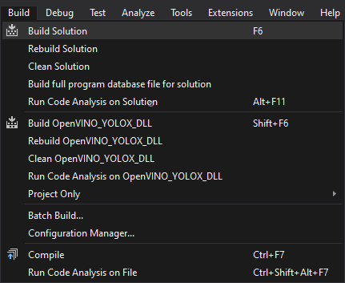
Gather Dependencies
Right-click the project name in the Solution Explorer panel and select Open Folder in File Explorer from the popup menu.

In the new File Explorer window, go to the parent folder.
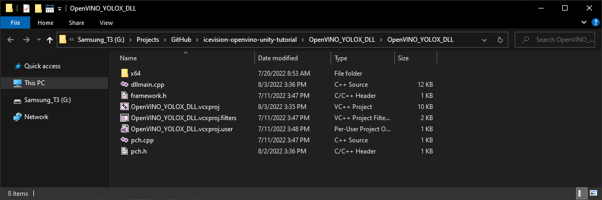
Open the x64 → Release subfolder.

We’ll need to copy all the DLL files in this folder and the plugins.xml file to the Unity project.
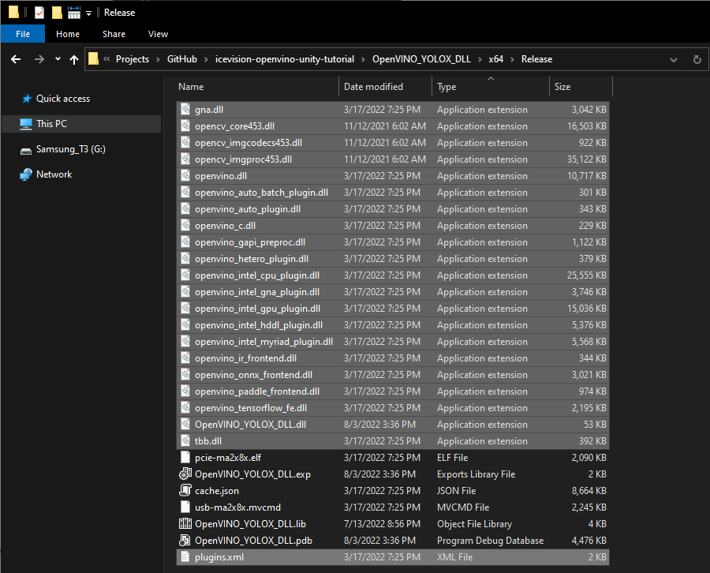
Summary
This post covered creating a dynamic link library (DLL) file to perform inference with a YOLOX model using OpenVINO. In part 3, we build a project in Unity that uses this DLL.
Previous: End-to-End Object Detection for Unity With IceVision and OpenVINO Pt. 1
Next: End-to-End Object Detection for Unity With IceVision and OpenVINO Pt. 3
Project Resources: GitHub Repository